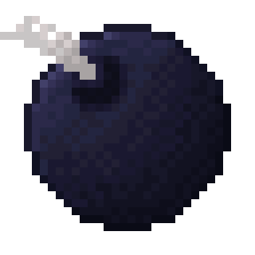

A remake of Faithful
This texture pack is a version of Faithful personalised to my liking.
It also adds custom textures which will be listed below.
Custom Textures - 1.18.2
Custom Textures are textures that are only given to certain items when named via Optifine.
DeBread's Sword
Netherite Sword
DeBread's Elytra
Elytra
DeBread's Firework
Firework
Bomb
Firework
Golden Potion
Uncraftable Potion